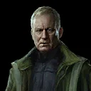
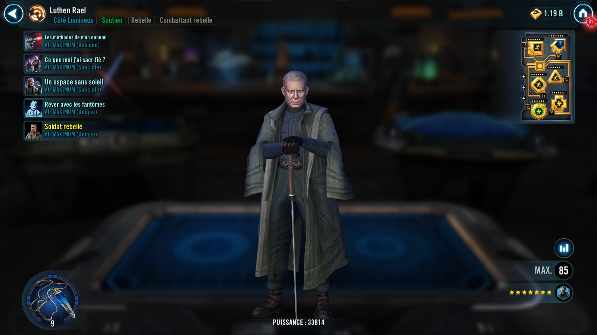
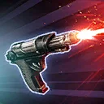
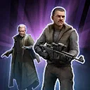
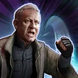
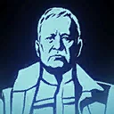

Deal Special damage to target enemy and inflict Healing Immunity for 2 turns.
Axis bonus: During Luthen's turn, inflict Buff Immunity for 2 turns on the target enemy, which can't be dispelled, and if the allied Rebel Commander is active, inflict Fear for 1 turn on the target enemy.
Curator bonus: Dispel all buffs on target enemy. During Luthen's turn, if the allied Rebel Commander is active, call them to assist.
Omicron Boost : While in Grand Arenas: During Luthen's turn, he gains 25 Speed (max 100) until the end of the encounter, and the target enemy has their Defense reduced by 30% until the next time Luthen uses his Basic ability or until he is defeated.

If the allied Leader is Rebel and not a Galactic Legend, summon a Rebel Trooper and promote them to a Rebel Commander. If the Rebel Commander is already present, dispel all debuffs on them and they gain a bonus turn. Target Rebel Fighter or Mon Mothma ally gains 30% Offense (stacking) and is immune to Turn Meter reduction until the end of their next turn.
Axis bonus: If the Rebel Commander is already present, they gain 50% Offense (stacking) for 2 turns.
Curator bonus: If the Rebel Commander is already present, they recover 50% Health and Protection. Target Rebel ally gains Frenzy for 2 turns.
Omicron Boost : While in Grand Arenas: If the Rebel Commander is already present, all allies gain Critical Damage Up for 2 turns.
Mon Mothma and all other Rebel Fighter allies gain 30% Offense (stacking) and are immune to Turn Meter reduction until the end of their next turn. Target Rebel Fighter ally ignores Taunt until the end of their next turn.

Mon Mothma and all Rebel Fighter allies gain Speed Up and Bonus Protection (20%) for 2 turns.
Axis bonus: All Rebel Fighter allies dispel all debuffs from themselves. For each debuff dispelled, they gain 10% Turn Meter. If the allied Rebel Commander is active, inflict Marked on them for 2 turns, which can't be copied or dispelled.
Curator bonus: Rally Mon Mothma and all Rebel Fighter allies.

Mon Mothma and Rebel Fighter allies gain 20 Speed. At the start of each encounter, if the allied Leader is Rebel and not a Galactic Legend, summon a Rebel Trooper and promote them to Rebel Commander. While the Rebel Commander is active, Luthen is immune to Ability Block, Cooldown Increase, and Taunt effects, and he can't be targeted, or reduced below 100% Health.
>At the start of battle if there is a Rebel Leader and there are no Rebel Galactic Legend allies: If Saw Gerrera is the Leader, Luthen gains the Axis effect. Otherwise, he gains the Curator effect.
Axis bonus: Whenever a Rebel Trooper is summoned, they gain the Expendable Asset effect and are inflicted with Marked for 2 turns, which can't be copied or dispelled. Whenever a Rebel Trooper is defeated, all Attacker allies have their cooldowns reset.
Curator bonus: Whenever a Rebel Trooper begins its turn, Luthen and Mon Mothma gain 20% Turn Meter.
Expendable Asset: Can't Stealth and can always be targeted by enemies. Lose 70% Max Health and gain 70% Offense. Whenever Rebel Trooper uses its Basic ability, inflict Defense Down on the target enemy for 2 turns, which can't be evaded or resisted. Whenever Rebel Trooper uses a Special ability, they are inflicted Marked for 2 turns which can't be copied or dispelled and gain Retribution for 2 turns.
Omicron Boost : While in Grand Arenas: If there are no Rebel Galactic Legend allies at the start of battle, Mon Mothma and Rebel Fighter allies gain 30% Max Health, Mastery, and 20 Speed, and they gain Bonus Protection (50%) for 1 turn. The first time the Rebel Commander is defeated in each battle, summon a Rebel Trooper and promote them to Rebel Commander.
Light Side, Attacker, Rebel, Rebel Fighter
[Basic] Rebel Bravado: Dispel all buffs on target enemy and deal Physical damage to them.
If this unit has been promoted to Officer or Commander, inflict Daze for 1 turn.
[Special] Rebel Morale: Rebel allies gain Defense Penetration Up for 2 turns.
If this unit has been promoted to Commander, Rally all Rebel Fighter allies.
This ability can only be used if Rebel Trooper has been promoted to Officer or Commander.
[Unique] Rebellion Tactics: Mon Mothma and Rebel Fighter allies have +15% Critical Damage and +30% Tenacity.
If this unit has been promoted to Commander, these bonuses are tripled.
[Unique] Summoned: This unit's stats scale with the summoner's stats. This unit can only be summoned to the ally slot if it's available. This unit can't be summoned in certain raids. This unit can't be revived. If an effect counts defeated units, this unit doesn't count. When there are no other allied combatants, this unit escapes from battle. A unit can't be revived if this summoned unit exists in their slot.